Playwright Básico
Parte 1 · Introdução
ao Playwright
Primeiros testes · Instalação do zero · Conceitos fundamentais
Duração
2 horas
Tópicos
7 seções
Nível
Iniciante
playwright.dev

Agenda da Aula
O que vamos aprender hoje
00:00
Abertura
Boas-vindas e objetivos
00:10
01 · O que é Playwright
Conceito, site, quando usar
00:18
02 · Setup e primeiro teste
npm init playwright@latest do zero
00:40
03 · Locators
getByRole, getByText, boas práticas
00:55
04 · Interações básicas
click, fill, select, upload, keyboard
01:07
05 · Assertions e auto-wait
expect, auto-waiting, sem waitForTimeout
01:22
06 · Execução e browsers
Chromium, Firefox, WebKit, headed/headless
01:32
07 · Debug rápido
UI mode, trace viewer, extensão
01:40
Q&A — Perguntas
Dúvidas e encerramento
Seção 01 · 8 min
O que é Playwright?
Definição
- Biblioteca open-source da Microsoft
- Automação de browsers para testes E2E
- Suporta Chromium · Firefox · WebKit
- API única para os 3 browsers
- Disponível para JS/TS, Python, Java, .NET
Principal diferencial
- Auto-wait nativo — sem flakiness
- Paralelismo real por padrão
- Trace viewer e UI mode integrados
- Crescimento acelerado desde 2020
Quando usar Playwright
- Testes de fluxos completos de usuário
- Múltiplos browsers simultaneamente
- Múltiplas abas, downloads, uploads
- Projetos TypeScript / JavaScript
- Quando precisar de velocidade com paralelismo
Site oficial
playwright.dev
Abrir ao vivo durante a aula
Seção 02 · 22 min
Setup e Primeiro Teste
Passo a passo
1
Criar pasta vazia
mkdir meu-projeto && cd meu-projeto2
Instalar Playwright
npm init playwright@latest3
Explorar estrutura gerada
playwright.config.ts · tests/ · package.json
playwright.config.ts · tests/ · package.json
4
Rodar os testes
npx playwright test5
Ver relatório HTML
npx playwright show-report# Instalar npm init playwright@latest # Rodar testes npx playwright test # Rodar um arquivo npx playwright test example.spec.ts # Ver relatório npx playwright show-report
⚠️ Atenção: Requer Node.js v18+. Verificar com
node -v antes de começar.
Seção 02 · Setup
Estrutura do Projeto
# Estrutura gerada pelo wizard meu-projeto/ ├── playwright.config.ts ← config global ├── package.json ├── tests/ │ └── example.spec.ts ← seu primeiro teste └── tests-examples/ └── demo-todo-app.spec.ts
// example.spec.ts (gerado) import { test, expect } from '@playwright/test'; test('has title', async ({ page }) => { await page.goto('https://playwright.dev/'); await expect(page) .toHaveTitle(/Playwright/); });
playwright.config.ts — principais opções
testDir— pasta com os testestimeout— timeout por teste (30s padrão)retries— tentativas em caso de falhaworkers— paralelismo (workers simultâneos)use.baseURL— URL base paragoto('/')projects— browsers configurados
💡 Dica: O exemplo gerado em
tests-examples/ é excelente para aprender. Abra e leia junto com a turma!
Seção 03 · 15 min
Locators — Encontrando Elementos
Locators recomendados
getByRole()— papel de acessibilidadegetByText()— texto visívelgetByLabel()— label do inputgetByPlaceholder()— placeholdergetByTestId()—data-testidgetByAltText()— alt de imagens
❌ Evitar
.btn.btn-primary > span— CSS frágil//div[@class="x"]/button[2]— XPath longo- Seletores por posição (nth-child)
// ✅ getByRole — mais recomendado await page.getByRole('button', { name: 'Entrar' }).click(); // ✅ getByLabel — para formulários await page .getByLabel('E-mail') .fill('user@email.com'); // ✅ getByTestId — quando há data-testid await page .getByTestId('submit-btn') .click(); // ✅ getByText — para textos visíveis await page .getByText('Bem-vindo!') .isVisible();
Seção 04 · 12 min
Interações Básicas
Ações disponíveis
click()— clica no elementodblclick()— duplo cliquehover()— passa o mousefill()— preenche (limpa antes)type()— digita caractere a caracterepress('Enter')— tecla do tecladoselectOption()— select / dropdownsetInputFiles()— upload de arquivocheck()/uncheck()— checkbox
// Formulário completo await page.goto('/login'); await page.getByLabel('E-mail') .fill('user@email.com'); await page.getByLabel('Senha') .fill('senha123'); await page.getByRole('button', { name: 'Entrar' }).click(); // Dropdown await page.getByLabel('País') .selectOption('Brasil'); // Tecla await page.getByRole('searchbox') .press('Enter');
Seção 05 · 15 min
Assertions e Auto-wait
expect() — assertions principais
toBeVisible()— elemento visíveltoBeHidden()— elemento ocultotoHaveText()— tem o textotoHaveValue()— valor do inputtoBeChecked()— checkbox marcadotoBeEnabled()— habilitadotoHaveURL()— URL da páginatoHaveTitle()— título da aba
❌ Anti-pattern:
waitForTimeout(3000) torna testes lentos e frágeis. O auto-wait resolve isso!
// Auto-retry embutido — aguarda até passar await expect(page .getByRole('heading')) .toBeVisible(); await expect(page) .toHaveURL(/dashboard/); await expect(page .getByText('Salvo!')) .toBeVisible(); // ❌ Nunca usar isso await page.waitForTimeout(3000); // ✅ Alternativa correta await expect(page .getByText('Carregando...')) .toBeHidden();
Seção 05 · Auto-wait
Como funciona o Auto-wait
👁️
1. Visível
O elemento precisa estar visível na página
⚖️
2. Estável
Sem animações em andamento, elemento parado
🖱️
3. Habilitado
Não está desabilitado ou bloqueando eventos
Timeout padrão
30s
por ação / assertion
- Configurável globalmente no
playwright.config.ts - Configurável por teste:
test.setTimeout(60000) - Assertions tentam novamente a cada ~100ms
💡 Resultado: Com o auto-wait, os testes em Playwright têm muito menos flakiness (testes que falham de forma intermitente) do que em Selenium ou outras ferramentas sem esse mecanismo.
Seção 06 · 10 min
Execução e Browsers
⚡
Chromium
Padrão. Cobre Chrome e Edge. Mais rápido.
🦊
Firefox
Motor Gecko. Versão customizada do Firefox.
🧭
WebKit
Motor do Safari. Testa iOS/macOS no Linux.
# Headed (com janela visível) npx playwright test --headed # Apenas Firefox npx playwright test --project=firefox # Limitar paralelismo npx playwright test --workers=1
💡 Demo: Rode
npx playwright test --headed ao vivo para mostrar o browser abrindo. O efeito visual é impactante na primeira aula!
Seção 07 · 8 min
Debug Rápido
UI Mode — favorito da turma
- Interface visual para rodar testes
- Time-travel com screenshot de cada passo
- Ver DOM no momento de cada ação
- Filtrar, buscar e re-rodar testes
Trace Viewer
- Grava screenshots, network, console
- Essencial para debugar falhas em CI
- Habilitar:
trace: 'on-first-retry' - Navegar cada passo do teste falho
Extensão VS Code
- Rodar testes com um clique
- Resultado inline no editor
- Codegen integrado
# UI Mode (interface visual) npx playwright test --ui # Debug passo a passo npx playwright test --debug # Gerar código automaticamente npx playwright codegen playwright.dev # Ver trace npx playwright show-trace trace.zip # Habilitar trace no config use: { trace: 'on-first-retry', }
Resumo
O que aprendemos hoje
Conceitos
- Playwright é da Microsoft, suporta 3 browsers
- Auto-wait elimina a necessidade de sleeps
- Locators semânticos são mais robustos
- Nunca usar
waitForTimeout()
Comandos essenciais
npm init playwright@latestnpx playwright testnpx playwright test --uinpx playwright show-report
Locators aprendidos
getByRole()getByText()getByLabel()getByTestId()
Interações aprendidas
click()fill()press()selectOption()setInputFiles()
Debug aprendido
- UI Mode, Trace Viewer, Extensão VS Code
🙋
Perguntas · 20 min
Q & A
Dúvidas, comentários e feedbacks.
Essa é a hora de perguntar tudo!
playwright.dev
playwright.dev/docs/intro
Até a próxima aula!
Obrigada! 
Continue praticando em playwright.dev
A Parte 2 vem aí!
Documentação
playwright.dev/docs/intro
Novidades
playwright.dev/docs/release-notes